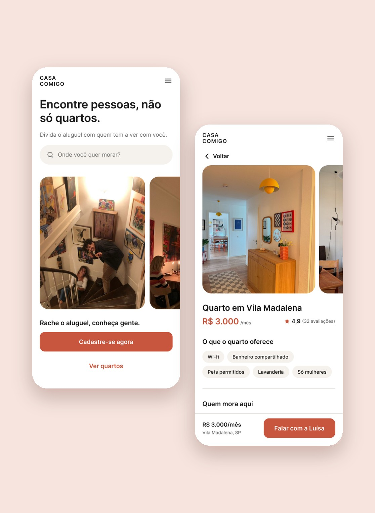
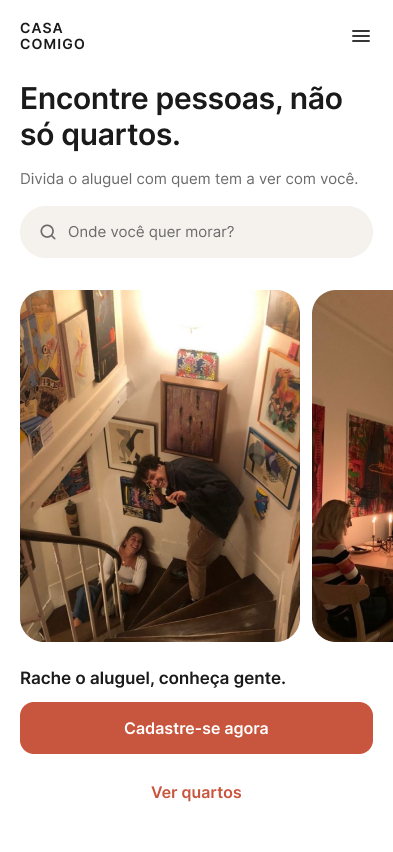
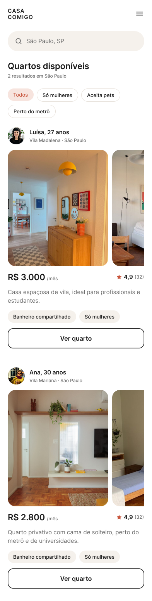
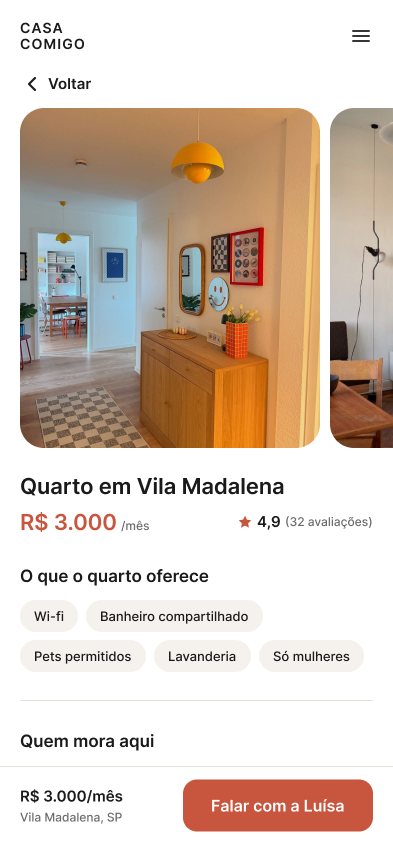
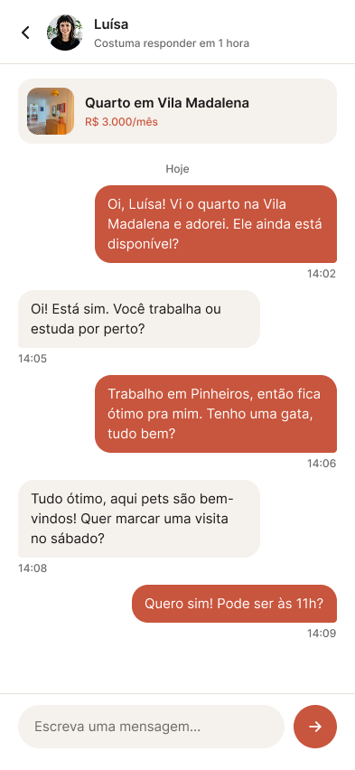
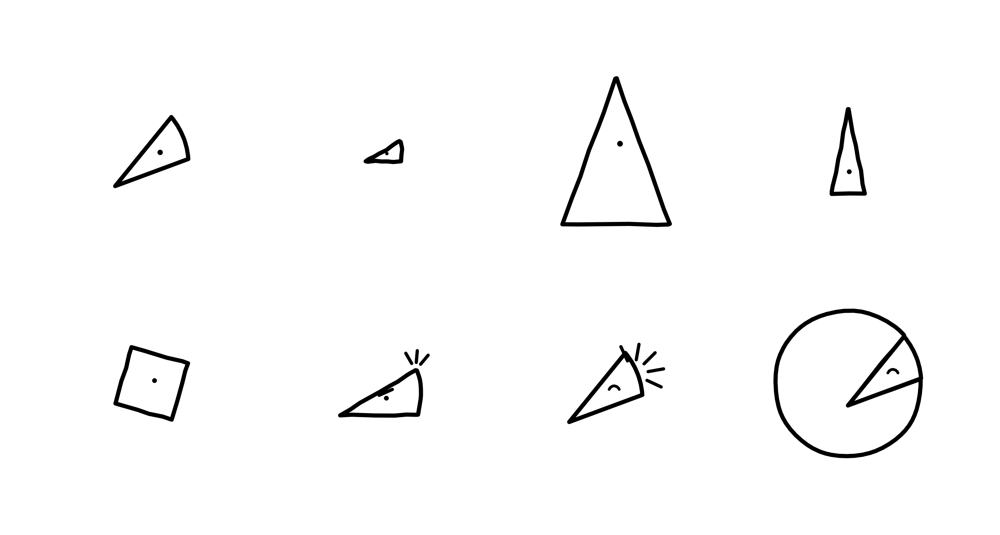
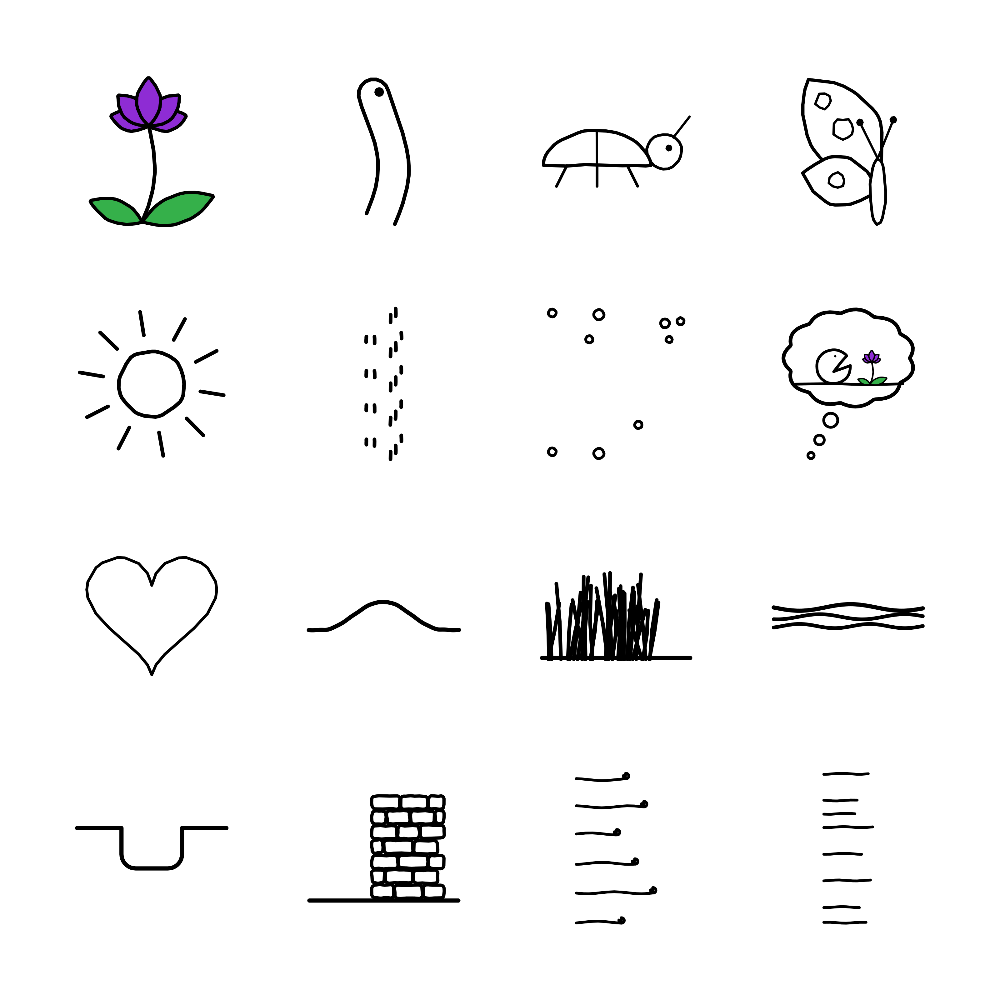
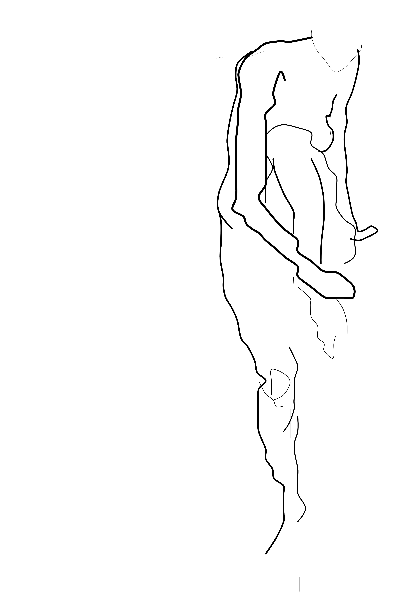
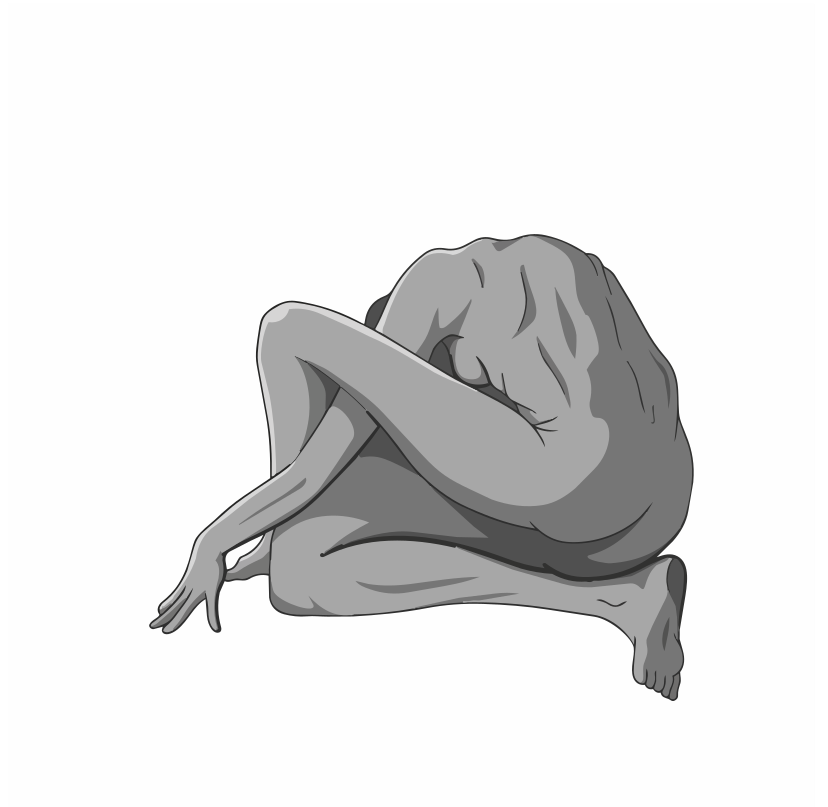

Casa Comigo
App criado no curso de UX/UI da EBAC para encontrar moradia e se conectar por gostos e interesses.
Ver projetoMotion design, animação, arte generativa, ilustração e direção de arte. Escolha um projeto para ver os detalhes.

App criado no curso de UX/UI da EBAC para encontrar moradia e se conectar por gostos e interesses.
Ver projetoGerador de arte ASCII interativo: teste ao vivo, digite sua palavra e use sua câmera.
Testar agoraReleitura de uma cena de Pulp Fiction em arte ASCII animada, desenhada só com 0 e 1.
Ver projetoManchas de cor desfocadas e espelhadas que se expandem e se recolhem, como um teste de Rorschach em movimento.
Ver projetoTipografia cinética: letras soltas que se organizam e se desfazem em movimento.
Ver projetoAnimação generativa em três atos: fileiras que piscam, uma nuvem que se espalha e bolhas caindo.
Ver projetoSérie de animações de flores explorando desabrochar, mosaico de blocos e pixels esticados.
Ver projeto
Adaptação inspirada no livro A Parte Que Falta, de Shel Silverstein.
Ver projeto
Programação visual e design de cardápio para um jantar colaborativo na House of Coisas.
Ver projetoMotion graphics para a label de música eletrônica Antrosujo.
Ver projeto
Direção de arte e roteiro de curta-metragem autoral no SENAC Lapa Scipião.
Ver projeto
Corpos e silhuetas femininas em Procreate e Affinity Designer.
Ver projetoCasa Comigo é um app que eu criei no curso de UX/UI da EBAC. A ideia é ajudar as pessoas a encontrar moradia e, ao mesmo tempo, gente para dividir a casa a partir de gostos e interesses em comum: hobbies, rotina e até a playlist favorita. Desenvolvi o conceito, as telas e um design system próprio, com componentes reutilizáveis e um protótipo navegável que vai da busca até o chat com quem mora no quarto.
Clique nas telas para navegar: busca, cadastro, lista de quartos, perfil de quem mora e chat.
Abrir protótipo em tela cheiaPrincipais telas do fluxo, da busca até a conversa com quem mora no quarto.




Design system do app: paleta, tipografia e componentes usados em todas as telas.
Encontre pessoas, não só quartos.
Quarto em Vila Madalena
O que o quarto oferece
Divida o aluguel com quem tem a ver com você.
Vila Madalena · São Paulo
Releitura de uma cena de Pulp Fiction em arte ASCII animada. Cada quadro do filme é redesenhado só com 0 e 1, em branco sobre preto, num gerador que eu mesma criei. O código binário vira luz e sombra, e a cena aparece no meio dos números.
Manchas de cor desfocadas e espelhadas que se expandem e se recolhem, como um teste de Rorschach em movimento.
Tipografia cinética: letras soltas que se organizam e se desfazem em movimento.
Animação generativa em três atos: fileiras que piscam, uma nuvem que se espalha e bolhas caindo. Feita com expressões no After Effects.
Série de animações de flores explorando desabrochar, mosaico de blocos e pixels esticados.
Adaptação inspirada no livro A Parte Que Falta, de Shel Silverstein.
Pranchetas com os assets usados na composição da animação.


Programação visual e design de cardápio desenvolvidos para o jantar colaborativo especial Aguikimchi x Dery Lima, promovido na House of Coisas.
Motion graphics para a label de música eletrônica Antrosujo.
Direção de arte e roteirização de projeto de curta-metragem autoral desenvolvido durante a especialização no SENAC Lapa Scipião.
Ilustração de corpos e silhuetas femininas.



Desenhadas no papel com carvão e pastel seco e depois vetorizadas no Illustrator.
